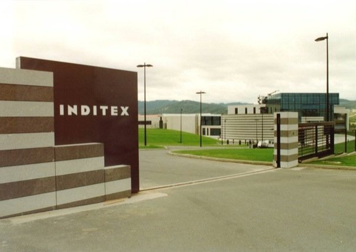

Proyecto Digitalización de Hanin. Primera evaluación, noviembre de 2026.
De una tienda a un stock conectado
Cómo la tecnología cambió la forma de trabajar y vender de Zara, y qué mejora propongo para su futuro.
Preguntas del proyecto
La pregunta de toda la clase
¿Cómo ha cambiado la tecnología la forma de trabajar, vender y generar valor de esta empresa, y qué mejora digital propondríamos para su futuro?
Mi pregunta sobre Zara
¿Cómo se coordinan el inventario, la tienda física y la venta online?
En este número
-
1
De una tienda al mundoSiete momentos, de la primera tienda de 1975 al pago sin caja.

-
2
Antes y despuésCómo pasó Zara de contar la ropa a mano a saberlo todo en tiempo real.

- 3 Ver la prenda de verdadLo que Zara hace bien, lo que puede mejorar y mi propuesta.
-
4
Fuentes y contactoDe dónde sale cada dato, los documentos y cómo usé la IA.
